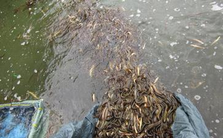

我在去年的春天，大概就是现在的这个时候，有一阵子我的双腿突然开始疼痛。起初只是走路的时候觉得关节里面摩擦的比较厉害，没有过多久，疼得我走路都走不了了，有时在家里走着走着就会突然摔倒，如果不扶着东西 我自己根本没有能力站起来！没办法我只好告诉我老公，（因为平时他在家我很少过多的走动，或者我走动的时候他差不多全部不在我走动的范围内，无法看见我）因为我老公在中国骨科界还是属于知名专家的，我老公在听完我对病情的陈述后，他十分十分沉重的告诉我，估计我得的是退行性关节炎。通俗的说就是在正常的情况下，人的关节是在50多到60多岁才开始逐步老化，如果是身体机能比较好的人，甚至80 90岁多关节是健康的 ，而我当时刚刚27岁！并且这个病（退行性关节炎），在目前尚无特效疗法，但若经过适当的治疗，疼痛只能够减轻。如果关节功能出现障碍，必须考虑手术治疗！
第2天老公带我去他工作的医院拍片子，结果证实了他判断的正确。并且片子显示我的关节不是一般的老化 而是要面临着直接换关节才能保证我生活基本自理。我老公工作的医院在中国是绝对属于最好的医院之一，他的同事和学生们绝大部分是从美国的哈佛大学医学院和斯坦弗大学医学院留学回来的，耶鲁大学每年都派有好几个专家在他工作的科室轮流来讲学。当时我老公把我的片子拿到科室里讨论，大家都异常震惊，因为尽管在教科书上 是有20多岁就出现关节老化的，但是在现实中，他们谁也没有看见过！就连博学的耶鲁大学的教授都没有在现实接触过！最后大家一致决定，为了我以后的生活可以自理，必须要换人工膝关节！
我虽然不是学医的 但是我和我老公在一起多少也具备了一定的人工关节置换知识，手术风险不低，创伤不小，并且就是这个手术做得再好，毕竟不是自己原装的关节，对以后的行动还是有影响，更关键的是 因为人工关节的寿命并不长，短则2 3年多则7到10年就要再次置换。费用也不少低如果用比较好的人工关节手术花费至少在10万附近！钱还是小事，关键是人太受罪了！！
我悄悄问过他的同事，如果不换的后果是什么，人家说就是生活十分不便，必须要人照顾才行，当然生命危险的没有， 呵呵。我老公和我回家后，就急着到银行取钱，我问他干什么，他说他要给我马上做手术，我告诉他能不能给我一点时间，我求佛菩萨加持看看能不能好，反正这个病已经这个样子，他也不会再恶化了。我不想做手术。我怕疼。如果求佛菩萨还没有好的话，到时候在做也不迟。我相信佛 菩萨一定会加持我康复的，一定会！我当时有种强烈的感觉我会在不久的将来一定可以康复！我老公仔细一想同意我的想法了。因为那时我基本上丧失了自理的能力。我一个人在家他不放心，每天背着我和他一起上班下班，他象个负责的保姆，给我作饭 洗澡，带我上厕所。每天在认认真真的默默做着，从来没有抱怨一次。我好多次都被他感动的流泪了。
我每天主要的任务就是修行 修行 还是修行。那时候我就向一个不知道疲倦的人，特别努力的做功课，一本法华经，一上午就读完了。80华严6天半就结束了。我每天至少有12个小时在诵经。回到家里他睡着了以后 我偷偷的从床上爬下来 爬到佛堂里礼拜佛菩萨，如果是双休日，我老公就带我去不同的市场每次把身上带的钱全部花完，进行大量的放生，并且我们的亲戚朋友他的同事大家全部踊跃支持，大家每次放生的总金额都在3万以上，最多一次居然超过了5万。
没有隔多久，老公的医院组织他们春游，目地就是九华山。这是他们科室成立57年以来，居然第一次去其他省旅游。我是特别想去，尽管以前去过。但是我行动不方便经过考虑还是不要拖累大家。最后我们没有去。但是在其他人出发的前一天，我老公把上个月的工资全部交给了他的学生，让他把钱交到九华山的肉身殿，求地藏菩萨保佑我马上康复。等那个学生回来后还带了九华山的肉身殿的收据，他向负责的和尚说了我的情况，求他开个收据证明他把钱如实的供养了菩萨。
后来，我们又在论坛得知了不少的印经消息，我们全部捐了款，印了很多的金刚经，法华经，地藏经，楞严经等众多正法书籍。我把做的这些功德全部回向给正法久住。十方众生都能够早日成就果位 世界和平，同时向十方诸佛菩萨忏悔我所有的罪孽，最后才回向给自己早日康复，这样坚持了一个多月，有一天，我老公向往常一样带我去上班，他当时正在做手术，我要上厕所了，我忍了好久，实在是忍不住了，看他还是没有回来 我打算自己用凳子移去厕所，没有搞好我摔在地上，我然后就自己突然能够直接站起来了。我快步走向厕所，解决了问题。呵呵然后我高兴的在医院里到处走来走去，很多认识我的人都特别特别惊讶！问我怎么好的。我骄傲的告诉他们是菩萨保佑我，我才康复的！很多人听了都由衷的说信佛就是好！我在外面转了很久，因为口渴要喝水，我就打算回老公办公室喝点水，在电梯里正好遇到下手术台的老公，我老公惊喜的问我 你怎么可以自己走了。我说是的。我也不知道我怎么可以走了，并且腿也不疼了。我发现在这段没有走路的日子里我的腿部肌肉萎缩了不少。经过差不多一个月的锻炼我的腿部肌肉以开始恢复了！
到现在我的腿再也没有疼过，以前在家里自己上个厕所都觉得特别费劲。恢复后我和老公到藏地旅游一走路就是2 3公里人都不觉得累。这真是菩萨加持的结果呀！各位师兄们，如果有苦难那就求佛菩萨，真的一定是有求必应的！只是感应的速度快慢而已。记住，佛菩萨是真的有求必应！！！